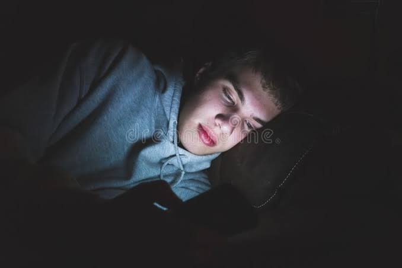

Screen Time: Smartphones, Apps and Digital Wellbeing
How the phone became the center of everyday life
Not long ago, most of us needed a whole bag of separate gadgets to get through a day. We had a camera for photos, a paper map or GPS for directions, an alarm clock to wake up, and a music player for the commute. Today, all of these things live inside a single device that fits in a pocket. Because the smartphone also holds our messages, our social media, our banking and our homework, we reach for it dozens of times a day, often without thinking. For many students, the phone is no longer just a tool but the place where most of daily life happens.
How much time, and on what?
The numbers show just how big a role phones play in young people's lives. A large U.S. survey found that teenagers aged 13 to 18 spend about 8 hours and 39 minutes a day with entertainment screen media, and this does not even include school or homework (Rideout et al., 2022). Younger tweens aged 8 to 12 were not far behind at 5 hours and 33 minutes (Rideout et al., 2022). A separate Pew Research Center survey found that 46% of U.S. teens say they are online almost constantly (Pew Research Center, 2024). When it comes to the kinds of apps, video and social platforms lead the way: 90% of teens use YouTube, and majorities also use TikTok (63%), Instagram (61%) and Snapchat (55%), which is also a popular messaging app (Pew Research Center, 2024). About 73% of teens visit YouTube every day, which shows that these apps are a daily habit and not an occasional treat (Pew Research Center, 2024).
The good side
It would be unfair to blame the phone for everything, because it genuinely makes life easier in many ways. Used with intention, it can connect us, teach us and keep us safe.
- Communication: Messaging and video calls let us stay close to friends and family who live in other cities or countries.
- Learning: Students can look up a topic, watch a tutorial or practice a language in a few taps, wherever they are.
- Creativity: A phone works as a camera, a video editor and a music studio, so anyone can create and share their own work.
- Navigation: Maps and public transport apps help us find our way in unfamiliar places without getting lost.
- Safety: In an emergency we can call for help or share our live location with someone we trust.
The challenges
The same device that helps us can also pull us away from the things we actually want to do. Many of these problems build up slowly, which makes them easy to overlook.
- Distraction: A single notification can break our concentration, and a quick check often turns into twenty minutes of scrolling.
- Sleep: A review of 20 studies found that children and teens who use or have access to a screen device at bedtime are more than twice as likely to get too little sleep (Carter et al., 2016).
- Focus: Constantly switching between apps and chats makes it harder to concentrate on one task, like studying for an exam, for a long period.
- Comparison: Social media mostly shows other people's best moments, which can make our own life feel less exciting or less successful.
- FOMO: The fear of missing out makes many people check their phones again and again, worried that they will miss news, plans or jokes their friends are sharing.

What is digital wellbeing?
Digital wellbeing means having a healthy, balanced relationship with technology, where our devices support our life instead of taking it over. It is not about throwing the phone away, but about noticing how much time we spend on it and how it makes us feel. The key question is "who is in control?", because if we pick up the phone on purpose we are in charge, but if the app keeps pulling us back in, then it is the app that is steering. To understand why this happens, read about how apps are designed to hook you, and then see which tools can help you take back control.